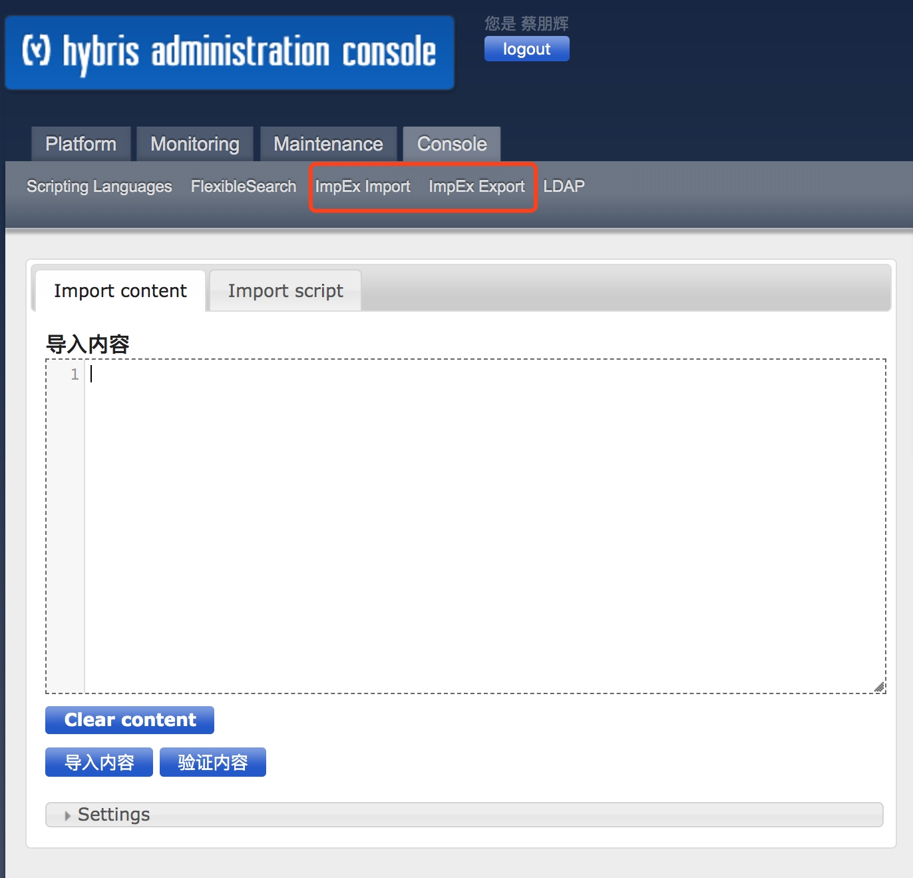

ImpEx 文件本质上是以‘,’分隔的文件（CSV），允许从SAP Commerce 进行紧凑，人工可读，导入和导出(creating, updating, removing, and exporting)数据。它们可以通过 SAP Commerce Administration Console(hac) 手动执行，也可以在特定位置保存 ImpEx 文件，在每次初始化系统时自动执行。

ImpEx 导入示例
# 目录信息 目录代码;目录名称;关联网店
INSERT_UPDATE Catalog;id[unique=true];name[lang=zh];baseStores(uid)
;TMProductCatalog12617;XX旗舰店;12617
# 目录版本信息 目录代码;版本;是否是活动目录版本;语言
INSERT_UPDATE CatalogVersion;catalog(id)[unique=true];version[unique=true];active[default=true];languages(isoCode)
;TMProductCatalog12617;Online;;zh
# 时间格式
INSERT modelType;startTime[dateformat='yyyy-MM-dd HH:mm:ss',default='2020-03-21 19:00:00']
# 引用导入示例
INSERT_UPDATE ECJDProduct;site;shopId[unique=true];wareId[unique=true];itemNum[unique=true];modified;documentStatus(code);&lkl
;京东企业购;20011;100007091117;AGLQ026;2020-07-15 10:10:10;PENDING;lkl2
;京东企业购;20011;100007091118;AGLQ027;2020-07-15 10:10:10;PENDING;lkl3
INSERT_UPDATE ECJDSKU;skuId[unique=true];outerId;modified;ecJdProduct(&lkl)
;1000070911171;AGLQ026-1-5;2020-07-15 10:10:10;lkl2
;1000070911172;AGLQ026-1-8;2020-07-15 10:10:10;lkl2
;1000070911181;AGLQ027-1-5;2020-07-15 10:10:10;lkl3
;1000070911182;AGLQ027-1-8;2020-07-15 10:10:10;lkl3
ImpEx 导入JOB定义
INSERT_UPDATE ServicelayerJob;code[unique=true];springId
;jobCode;jobSpringId
ImpEx 导出示例
"#% impex.setTargetFile(""Catalog.csv"");"
INSERT_UPDATE Catalog;id[unique=true];name[lang=zh];baseStores(uid)
"#% impex.exportItemsFlexibleSearch(""select {pk} from {Catalog} where id='TMProductCatalog10001'"");"
# 查看List类型的自定义字段 functionalLimit（数据库存储的是二进制的集合）,我们可以查对应的
"#% impex.setTargetFile(""UserGroup.csv"");"
INSERT_UPDATE UserGroup;uid[unique=true];functionalLimit
"#% impex.exportItemsFlexibleSearch(""select {pk} from {UserGroup} where {uid}='TMCustomerService'"");"
# 导出RDC/NDC配货单行
"$query=SELECT {ce.pk} FROM { ConsignmentEntry AS ce LEFT JOIN Consignment AS c ON {ce.consignment}={c.pk} LEFT JOIN Order AS o ON {c.order}={o.pk} LEFT JOIN PointOfService AS pos ON {c.pointOfService} = {pos.pk} LEFT JOIN PointOfServiceType AS postype ON {pos.posType}={postype.pk}} WHERE {postype.code} IN ('NDC','RDC') AND {o.payConfirmDate} BETWEEN '2019-11-11 00:00:00' AND '2019-11-12 00:00:00'"
"#% impex.setTargetFile( ""ConsignmentEntry.txt"" );"
INSERT_UPDATE ConsignmentEntry;;consignment(order(code));consignment(order(status(code)));consignment(code);consignment(status(code));consignment(pointOfService(bizCode));entryNum;product(code);quantity;allocQuantity;
"#% impex.exportItemsFlexibleSearch(""$query"", Collections.EMPTY_MAP, Collections.singletonList( Item.class ), true, true, -1, -1 );"
# 多表关联字段、包括字段在子类
"$query=SELECT {ce.pk} FROM {ConsignmentEntry AS ce JOIN Consignment AS c ON {ce.consignment}={c.pk} JOIN ORDER AS o ON {c.ORDER}={o.pk} JOIN OrderType ON {o.OrderType} = {OrderType.pk} JOIN PointOfService AS pos ON {c.pointOfService} = {pos.pk} JOIN PointOfServiceType AS postype ON {pos.posType}={postype.pk} JOIN ConsignmentDocType ON {c.consignmentDocType} = {ConsignmentDocType.pk} JOIN ConsignmentStatus ON {c.STATUS} = {ConsignmentStatus.pk} JOIN OrderEntry ON {ce.orderEntry} = {OrderEntry.pk} JOIN ApparelSizeVariantProduct ON {ApparelSizeVariantProduct.pk} = {ce.product} JOIN PlatformType ON {PlatformType.pk} = {o.platformType} JOIN BaseStore ON {BaseStore.pk} = {o.store} JOIN ChannelType ON {ChannelType.pk} = {BaseStore.channelType} LEFT JOIN Warehouse ON {Warehouse.pk} = {ce.warehouse} LEFT JOIN PointOfService AS pointOfService2 ON {pointOfService2.pk} = {o.orderStore}} WHERE {o.transOrderSource} IS NULL AND {ConsignmentDocType.CODE} IN ('SALES', 'SWAP', 'REPLENISHMENT' ) AND {ConsignmentStatus.code} NOT IN ('CANCELLED','TRADE_CLOSE','SPLIT_CLOSE') AND {OrderType.code} != 'BUYOFF' AND {ChannelType.CODE} = 'EC' AND {postype.CODE} != 'EC' AND {o.payConfirmDate} >= '2019-06-01 00:00:00' AND {o.payConfirmDate} < '2019-11-25 00:00:00'"
"#% impex.setTargetFile( ""ConsignmentEntry.txt"" );"
INSERT_UPDATE ConsignmentEntry;consignment(order(code));consignment(code);entryNum;consignment(order(Order.platformType(code)));consignment(order(store(channelType(code))));consignment(order(Order.orderStore(name)));consignment(status(name[lang=zh]));consignment(pointOfService(bizCode));warehouse(bizCode);consignment(pointOfService(posType(code)));consignment(order(Order.payConfirmDate));product(code);allocQuantity;orderEntry(OrderEntry.actualPaidUnitPrice);orderEntry(OrderEntry.tagPrice);
"#% impex.exportItemsFlexibleSearch(""$query"", Collections.EMPTY_MAP, Collections.singletonList( Item.class ), true, true, -1, -1 );"
"$query=SELECT {ce.pk} FROM {ConsignmentEntry AS ce JOIN Consignment AS c ON {ce.consignment}={c.pk} JOIN ORDER AS o ON {c.ORDER}={o.pk} JOIN OrderType ON {o.OrderType} = {OrderType.pk} JOIN PointOfService AS pos ON {c.pointOfService} = {pos.pk} JOIN PointOfServiceType AS postype ON {pos.posType}={postype.pk} JOIN ConsignmentDocType ON {c.consignmentDocType} = {ConsignmentDocType.pk} JOIN ConsignmentStatus ON {c.STATUS} = {ConsignmentStatus.pk} JOIN OrderEntry ON {ce.orderEntry} = {OrderEntry.pk} JOIN ApparelSizeVariantProduct ON {ApparelSizeVariantProduct.pk} = {ce.product} JOIN PlatformType ON {PlatformType.pk} = {o.platformType} JOIN BaseStore ON {BaseStore.pk} = {o.store} JOIN ChannelType ON {ChannelType.pk} = {BaseStore.channelType} LEFT JOIN Warehouse ON {Warehouse.pk} = {ce.warehouse} LEFT JOIN PointOfService AS pointOfService2 ON {pointOfService2.pk} = {o.orderStore}} WHERE {o.transOrderSource} IS NULL AND {ConsignmentDocType.CODE} IN ('SALES', 'SWAP', 'REPLENISHMENT' ) AND {ConsignmentStatus.code} NOT IN ('CANCELLED','TRADE_CLOSE','SPLIT_CLOSE') AND {OrderType.code} != 'BUYOFF' AND {ChannelType.CODE} = 'OFFLINE' AND {o.payConfirmDate} >= '2019-01-01 00:00:00' AND {o.payConfirmDate} < '2019-11-25 00:00:00'"
"#% impex.setTargetFile( ""ConsignmentEntry.txt"" );"
INSERT_UPDATE ConsignmentEntry;consignment(order(code));consignment(code);entryNum;consignment(order(Order.platformType(code)));consignment(order(store(channelType(code))));consignment(order(Order.orderStore(name)));consignment(status(name[lang=zh]));consignment(pointOfService(bizCode));warehouse(bizCode);consignment(pointOfService(posType(code)));consignment(order(Order.payConfirmDate));product(code);allocQuantity;orderEntry(OrderEntry.actualPaidUnitPrice);orderEntry(OrderEntry.tagPrice);
"#% impex.exportItemsFlexibleSearch(""$query"", Collections.EMPTY_MAP, Collections.singletonList( Item.class ), true, true, -1, -1 );"
ImpEx 删除示例
# 根据 uid 删除 UserGroup 中对应的数据
REMOVE UserGroup[batchmode=true];uid[unique=true];
;TMCustomerService;
# 删除整个表的数据
REMOVE Record[batchmode=true];itemtype(code)[unique=true]
;Record